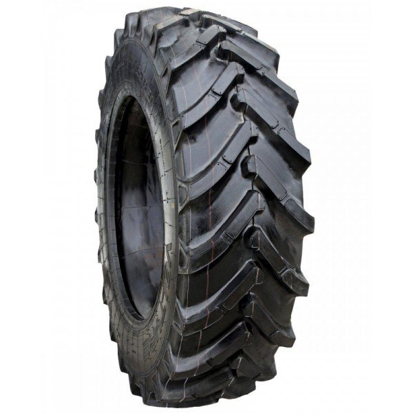

Welcome to padangos
PADANGOS.LT | Sezonas - Žieminės padangos
2020.10.30 04:11
Info arrow_drop_down Krepšelis shopping_cart Navbar Link menu Matmenys Laisva paieška Gamintojai
padangos.lt
97% mus renkasi dėl kokybiškų padangų ir greito montavimo. Plotis Padangos plotis Aukštis Profilio aukštis Skersmuo Ratlankio skersmuo Sezoniškumas Vasarinės Žieminės UniversaliosDidžiausi padangų gamintojai
Mūsų asortimente populiarūs padangų ženklai
--- Kontaktai D.U.K Padangų žymėjimas Mokėjimo būdai Pristatymas, atsiėmimas Padangų montavimas Užsakymo taisyklės GarantijaPagrindiniai padangų gamintojai
Mūsų asortimente populiarūs padangų ženklai
Viskas iš vienų rankų...
Kokybiškos padangos, montavimas ir saugojimas
DAUGIAUMažiausios kainos garantija
Radote pigiau, skirtumą grąžinsime
DAUGIAU PRISTATYMAS KITĄ DIENĄ DAUGIAU MONTUOK JAU ŠIANDIEN DAUGIAU KLIENTŲ APTARNAVIMAS DAUGIAU Puikus sukibimas ir vairavimo tikslumas visais met ų laikais ! NEXEN padanga universali N Blue 4 Season 205/55R16 91H59.00 eur Savaitės top pardavimai. Klientai rekomenduoja HANKOOK padanga žieminė W452 205/55R16 91H
66.00 eur Puikios padangos! KLEBER padanga žieminė Krisalp HP3 225/45R17 94H
84.00 eur
Padangų keitimas modernia įranga
APIEPadangų pasauga (saugojimas iki kito sezono)
APIEGeometrijos patikra
APIERegistracija ratų keitimui internetu
APIE Norėdami nustatyti tikrą padangos amžių galite atkreipti dėmesį į užkoduotus skaičius, kurie yra įspau... Padangų amžius Rekomenduojame vasarą keisti į vasarines, o žiemą žiemines padangas Kada keisti ratus Paprasti dalykai, kuriuos reikėtų prisiminti automobilio vairuotojui Apie vasarines padangas Rekomenduojame vienu sakiniu Trumpi patarimai perkant padangasInformacija pirkėjui
Susisiekite su mumis
telefonas: +370 611 25444 E-pašto adresas: info@padangos.lt Adresas: J.Kubiliaus 23, LT-09108 VilniusApie mus
Kontaktai Autoserviso paslaugos Apie įmonę, rekvizitai © 2018 UAB "Vilniaus Dagris" www.dagris.lt